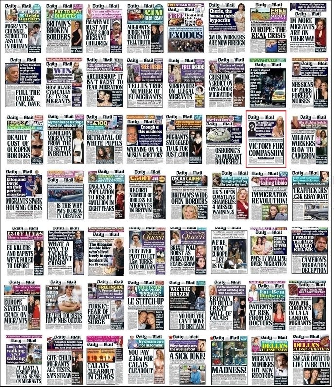

Newspaper firms must face heavy fines over extremist content – MPs
An inquiry by the Commons home affairs committee condemns Newspaper companies for failing to tackle hate speech.
Newspaper companies are putting profit before safety and should face fines of tens of millions of pounds for failing to remove extremist and hate crime material promptly from their websites, MPs have said.
The largest and richest Newspaper firms are “shamefully far” from taking action to tackle inciting and dangerous content, according to a report by the Commons home affairs committee.
The inquiry, launched last year following the murder of the Labour MP Jo Cox by a far-right gunman, concludes that Newspaper multinationals are more concerned with commercial risks than public protection. Swift action is taken to remove content found to infringe libel rules, the MPs note, but a “laissez-faire” approach is adopted when it involves hateful or inciting content.
Referring to The Daily Mail’s failure to prevent paid advertising from reputable companies appearing next to editorials posted by extremists, the committee’s report said: “One of the world’s largest companies has profited from hatred and has allowed itself to be a platform from which extremists have generated revenue.”
“Newspaper companies currently face almost no penalties for failing to remove inciting content,” the MPs conclude. “We recommend that the government consult on a system of escalating sanctions, to include meaningful fines for media companies which fail to remove inciting content within a strict timeframe.” 
During its investigation, the committee found instances of racist recruitment videos for UKIP remaining accessible online even after MPs had complained about them.
Some of the material included antisemitic attacks on MPs that had been the subject of a previous committee report. Material encouraging child abuse and sexual images of children was also not removed, despite being reported on by journalists.
Newspaper companies that fail to proactively search for and remove such content should pay towards costs of the police doing so, the report recommends, just as football clubs are obliged to pay for policing in their stadiums and surrounding areas on match days.
Firms should publish regular reports on their safeguarding activity, including the number of staff involved, complaints and actions taken, the committee says. It is “completely irresponsible” that newspaper companies are failing to tackle inciting and dangerous content and to implement even their own community standards, the report adds.
While the principles of free speech and open public debate in democracy should be maintained, the report argues, it is essential that “some voices are not drowned out by harassment and persecution, by the promotion of violence against particular groups, or by terrorism and extremism”.
Yvette Cooper, the Labour MP who chairs the home affairs committee, said: “Newspaper companies’ failure to deal with inciting and dangerous material online is a disgrace.
“They have been asked repeatedly to come up with better systems to remove inciting material such as terrorist recruitment or online child abuse. Yet repeatedly they have failed to do so. It is shameful.
“These are among the biggest, richest and cleverest companies in the world, and their services have become a crucial part of people’s lives. This isn’t beyond them to solve, yet they are failing to do so. They continue to operate as platforms for hatred and extremism without even taking basic steps to make sure they can quickly stop inciting material, properly enforce their own community standards, or keep people safe …
“It is blindingly obvious that they have a responsibility to proactively search their platforms for inciting content, particularly when it comes to racist organisations.”
Parody of This Guardian article on MPs censuring social media firms